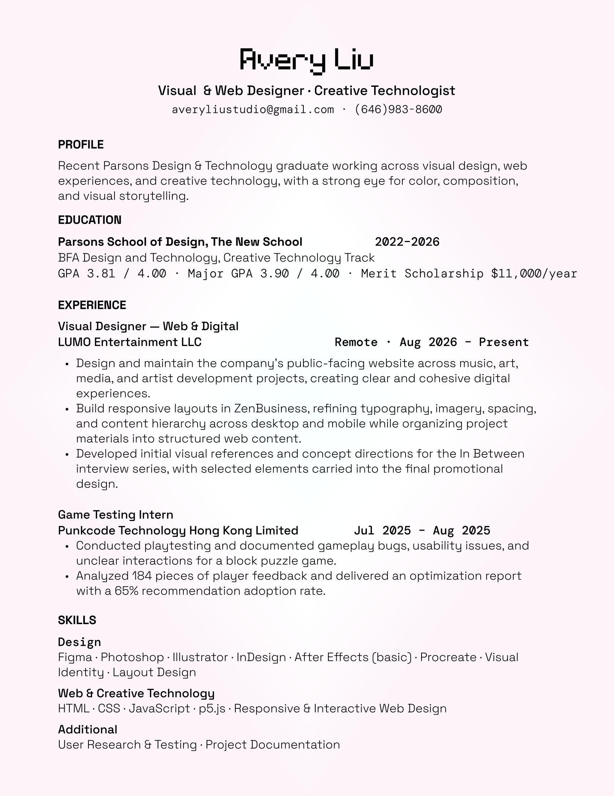

R — Resume
Resume
A quick overview of my experience, education, design skills, and creative technology background.
Experience
Visual Designer — Web & Digital
Aug 2026 – Present
LUMO Entertainment LLC · Remote
- Design and maintain the company’s public-facing website across music, art, media, and artist development projects, creating clear and cohesive digital experiences.
- Build responsive layouts in ZenBusiness, refining typography, imagery, spacing, and content hierarchy across desktop and mobile while organizing project materials into structured web content.
- Developed initial visual references and concept directions for the In Between interview series, with selected elements carried into the final promotional design.
Game Testing Intern
Jul 2025 – Aug 2025
Punkcode Technology Hong Kong Limited
- Conducted playtesting and documented gameplay bugs, usability issues, and unclear interactions for a block puzzle game.
- Analyzed 184 pieces of player feedback and delivered an optimization report with a 65% recommendation adoption rate.
Education
Parsons School of Design, The New School
New York, NY
BFA in Design and Technology, Creative Technology Track | Aug 2022 – May 2026
- GPA: 3.81 / 4.00 | Major GPA: 3.90 / 4.00
- Merit Scholarship: $11,000 per year
- Relevant Coursework: Creative Coding, Web Design, Interaction Design, User Experience, Visual Storytelling, Data Visualization
Skills
Design
Figma, Photoshop, Illustrator, InDesign, After Effects (basic), Procreate, Visual Identity, Layout Design
Web & Creative Technology
HTML, CSS, JavaScript, p5.js, Responsive & Interactive Web Design
Additional
User Research & Testing, Project Documentation
Resume PDF

Avery Liu — Resume
A one-page PDF resume featuring selected professional experience, education, and design and web skills.